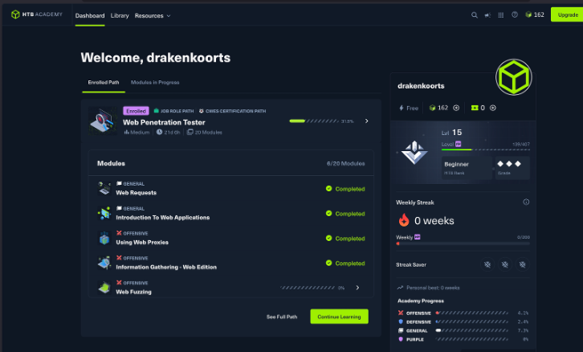
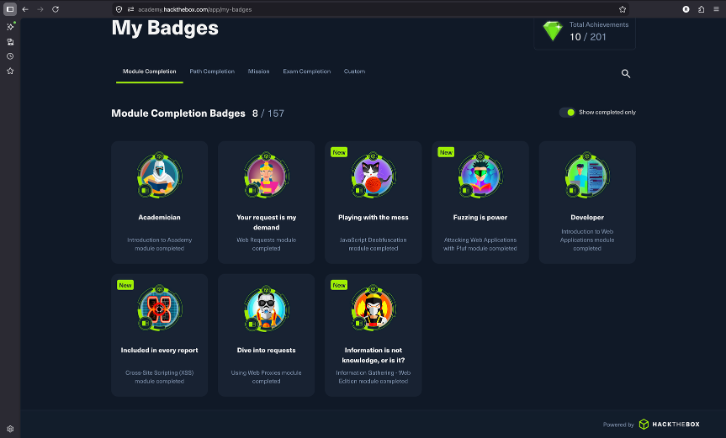
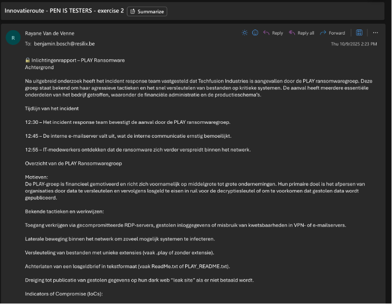
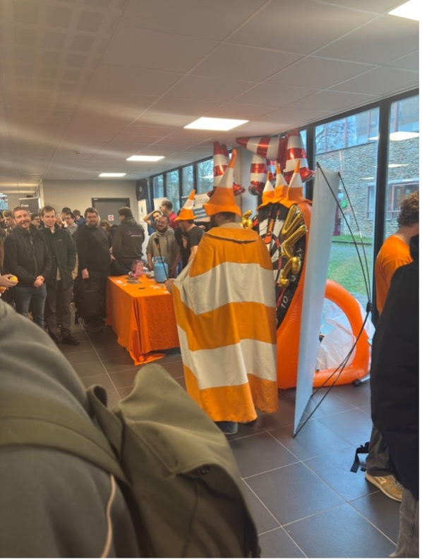
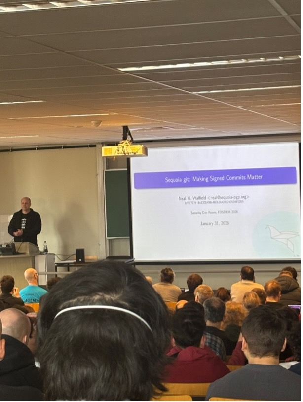

×
Student Toegepaste Informatica · Systeem- en Netwerkbeheer · DevOps & Cybersecurity enthusiast
Ik ben Rayane Van de Venne, student Toegepaste Informatica aan de Hogeschool PXL met de afstudeerrichting Systeem- en Netwerkbeheer (SNB). Mijn passie voor IT begon al in het middelbaar toen ik ontdekte dat ik liever bezig was met netwerkarchitectuur, Linux en virtuele machines dan met puur programmeren.
Tijdens mijn jaren op de PXL is die interesse alleen maar gegroeid, vooral richting Cybersecurity en DevOps. Ik vind het een uitdaging om systemen niet alleen in de lucht te houden, maar ze door automatisering ook echt veilig, performant en zuinig te maken.
Inmiddels heb ik een stevige technische basis opgebouwd. Ik werk vlot met Docker containers, Kubernetes en Terraform. Ook met cloud-omgevingen zoals AWS en Azure en het opzetten van CI/CD-pipelines heb ik ervaring. Wat ik het liefst doe? Dingen automatiseren, lastige bugs oplossen en zorgen voor een resultaat dat technisch optimaal beveiligd is en zo efficiënt mogelijk draait.
Volgens mijn Thalento-rapport ben ik een echte 'Pragmaticus': een zelfstandige doorzetter die kalm blijft als het druk wordt en pas echt in actie komt als er een concreet probleem opgelost moet worden. Door de POP-sessies heb ik mezelf beter leren kennen. Voor de komende vijf jaar is mijn plan simpel: zoveel mogelijk ervaring opdoen in DevOps en Cloud, een expert worden in tools als Terraform en Kubernetes. Mijn stage bij Melexis is daarvoor een super begin.
Zoveel mogelijk ervaring opdoen in DevOps en Cloud. Expert worden in Terraform en Kubernetes. Mijn stage bij Melexis verder uitbouwen. Focus op techniek; een rol als manager later niet uitgesloten.
Volledig zelf gehost community-platform, gebouwd met Vercel, Supabase, Cloudflare R2, Next.js en TypeScript.
Bekijk fishycommunity.com →Deze activiteit betrof een seminarie op de Corda Campus over ethisch hacken, georganiseerd door Toreon. De sessie bestond uit een presentatie over het methodisch vinden van kwetsbaarheden (CVE's) en een praktische 'Capture The Flag' (CTF) competitie. Mijn doel was om inzicht te krijgen in de realiteit van de cybersecurity-sector en te ontdekken hoe ik mijn technische achtergrond in Systeem- en Netwerkbeheer kon inzetten voor het opsporen van beveiligingslekken.
Tijdens het seminarie op 11 maart 2025 gaf spreker Robbe Van Roey een zeer motiverende presentatie. Ondanks zijn jonge leeftijd heeft hij al een indrukwekkend parcours afgelegd in de security-wereld. Zijn boodschap was duidelijk: om echt goed te worden in dit vak, is passie en een enorme tijdsinvestering noodzakelijk. Geïnspireerd door zijn verhaal over Bug Bounties en het zelfstandig vinden van zwakheden in grote systemen, ben ik onmiddellijk tot actie overgegaan.
Een van de meest memorabele momenten van de presentatie was toen Robbe enkele praktijkvoorbeelden deelde die aantoonden dat hacking niet altijd om complexe code draait, maar vaak om het vinden van menselijke fouten. Hij liet zien hoe hij een slimme lamp van een bekend merk had gehackt; een ogenschijnlijk onschuldig object dat door een gebrek aan beveiliging een toegangspoort tot een volledig netwerk kon worden. Nog indrukwekkender was zijn verhaal over een publiek toegankelijke API-key die hij per toeval had gevonden. Via deze sleutel kreeg hij toegang tot het PayPal-account van een groot bedrijf, waar op dat moment meer dan een miljoen euro op stond. Dit voorbeeld was voor mij een enorme eye-opener: het bewees dat de 'hacker-mindset' niet alleen gaat over supertechnische exploits, maar vooral over logisch nadenken en goed rondkijken naar menselijke fouten (human error). Het onderstreepte ook het belang van ethiek; in plaats van misbruik te maken van de situatie, maakte hij een melding via responsible disclosure.
Zoals blijkt uit mijn bewijsmateriaal, heb ik op 13 maart 2025 — slechts twee dagen na de sessie — een account aangemaakt op HackTheBox (HTB) Academy. Na een korte testperiode van twee dagen op de gratis tier, was ik zo overtuigd van de waarde van dit platform dat ik op diezelfde 13e maart ben overgestapt naar een betaald HTB Academy Student-abonnement. Deze financiële en tijdelijke investering was voor mij een bewuste stap om het traject van Web Penetration Tester serieus aan te pakken.


Na de theoretische uiteenzetting volgde de hands-on team-hackathon (CTF). Samen met mijn teamgenoten kregen we toegang tot een lab-omgeving waar we verschillende challenges moesten oplossen. Dit varieerde van web-exploits tot het kraken van eenvoudige wachtwoorden. Het was een intense ervaring waarbij de tijdsdruk ons dwong om efficiënt samen te werken en taken te verdelen. Ik merkte hierbij dat mijn basiskennis van netwerkarchitectuur en Linux me hielp om de structuur van de doelwitten sneller te begrijpen. We gebruikten diverse tools die later ook in mijn HTB-traject aan bod kwamen, zoals Nmap voor port scanning en de developer tools van de browser om broncode te inspecteren op zoek naar verborgen aanwijzingen.
Op mijn HTB-dashboard (gebruikersnaam: 'drakenkoorts') is mijn verdere voortgang in de fundamentele modules zichtbaar. Ik heb me gefocust op modules zoals 'Web Requests', waar ik de diepere lagen van het HTTP-protocol heb bestudeerd, en 'Introduction to Web Applications'. Vooral de module 'Information Gathering - Web Edition' was een eye-opener; hier leerde ik dat een succesvolle aanval voor 80% afhangt van de voorbereiding en verkenning van het doelwit. Daarnaast heb ik mijn Linux-vaardigheden naar een hoger niveau getild met de module 'Linux Fundamentals', wat essentieel is voor het beheren van de tools die een hacker dagelijks gebruikt. In mijn 'Favourite Modules' heb ik specifiek 'SQL Injection Fundamentals' en 'JavaScript Deobfuscation' opgenomen. Door dagelijks te oefenen, ook tijdens drukke periodes van mijn Research Project, heb ik badges behaald die mijn groei in technische vaardigheden bevestigen.
Ik heb deze activiteit gekozen voor mijn portfolio omdat het seminarie van Robbe Van Roey me eigenlijk meteen triggerde. Ik ben iemand die graag praktisch bezig is — een 'Pragmaticus' zoals uit mijn Thalento-test kwam — en dit was de eerste keer dat ik zag hoe je van die technische puzzels ook echt je werk kunt maken. Wat me vooral bijbleef, was dat je niet bij een groot bedrijf hoeft te zitten om hiermee bezig te zijn; je kunt als freelancer via bug bounties ook echt impact hebben.
Het belangrijkste dat ik heb geleerd, is dat cybersecurity veel meer is dan alleen maar wat tools draaien. Ik dacht altijd dat ik wel snel even een zwakheid zou vinden, maar tijdens de CTF en mijn eerste dagen op HackTheBox kwam ik mezelf tegen. Mijn grootste werkpunt is dat ik vaak te ongeduldig ben. Ik wilde meteen die exploit proberen, terwijl ik eigenlijk nog niet genoeg info had verzameld. Door die modules op HTB te doen, merkte ik dat 80% van het werk gewoon voorbereiding en 'recon' is. Dat was een goede les voor mij: rustig blijven en methodisch te werk gaan levert uiteindelijk meer resultaat op.
Ook het stukje over hoe je gevonden bugs meldt, vond ik erg nuttig. Je moet weten hoe je dit netjes aan een bedrijf laat weten (responsible disclosure) om te voorkomen dat je zelf in de problemen komt. Het gaat erom dat je bedrijven helpt om veiliger te worden, niet om dingen kapot te maken.
Deze activiteit was voor mij de perfecte link met mijn opleiding Systeem- en Netwerkbeheer. Ik wil later systemen niet alleen kunnen opzetten, maar ze ook echt dicht kunnen timmeren. De motivatie die ik hier heb opgedaan, neem ik nu mee naar mijn stage bij Melexis en mijn verdere plannen in DevOps. Ik ben na die dag niet gestopt met leren; ik ben eigenlijk nog elke dag bezig om die hacker-mindset verder te ontwikkelen.
Op 9 oktober 2025 nam ik deel aan de Innovatieroute Security bij Resilix op de Corda Campus. Tijdens deze sessie werkten we aan een realistisch scenario waarbij Techfusion Industries werd getroffen door de PLAY ransomwaregroep. Als onderdeel van het incident response team was het onze taak om de aanval te analyseren, de schade te beperken en uiteindelijk de directie te briefen over de situatie en het herstelplan.
Op 9 oktober 2025 nam ik deel aan de Innovatieroute Security bij Resilix op de Corda Campus. Deze dag stond in het teken van een uiterst realistisch scenario waarbij Techfusion Industries werd getroffen door de PLAY ransomwaregroep. De aanval verliep extreem snel: om 12:30 werd de incidentbevestiging gegeven en binnen slechts 15 minuten lag de volledige e-mailserver al plat. Als onderdeel van het incident response team was het onze taak om deze aanval te analyseren, de schade te beperken en uiteindelijk een herstelplan voor te leggen aan de directie.
Tijdens de technische analyse stelden we vast dat de aanvallers waarschijnlijk binnenkwam via bekende kwetsbaarheden in de Microsoft Exchange-servers van het fictieve bedrijf. Gedurende het onderzoek zochten we gericht naar Indicators of Compromise (IoCs). Zoals te zien is in de onderstaande screenshots van mijn inlichtingenrapport, keken we niet alleen naar bestanden met de .play extensie, maar ook naar ongebruikelijke CPU-belastingen en verdachte netwerkverbindingen naar TOR-nodes. Een van de meest kritieke leerpunten was de instructie om de geïnfecteerde systemen absoluut niet uit te schakelen. Door de computers aan te laten, bleven de encryptiesleutels in het vluchtige RAM-geheugen bewaard, wat van onschatbare waarde is voor forensisch onderzoek achteraf.

Om de 'blast radius' van de aanval te beperken, moesten we razendsnel handelen op het gebied van isolatie en crisiscommunicatie. Ik stelde een dringend bericht op voor alle medewerkers, waarin ik hen adviseerde om de netwerkverbinding fysiek te verbreken zonder het toestel uit te zetten. De uitdaging hierbij was om medewerkers duidelijke instructies te geven zonder onnodige paniek te zaaien. Deze fase was erg stressvol omdat de tijdsdruk voelbaar was; elke seconde die we verloren, gaf de ransomware de kans om zich verder door het netwerk te verspreiden naar andere kritieke servers.
Een bijzonder interessant onderdeel van de sessie was het inzicht in de zakelijke wereld van ransomware-onderhandelingen. De begeleiders lieten ons zien dat er specifieke websites op het dark web bestaan waar de chatgeschiedenissen tussen hackers en slachtoffers publiek worden gemaakt. Dit gaf een unieke blik op de koude manier waarop cybercriminelen te werk gaan. Dit nam ik mee naar de afsluitende briefing voor de "directie", waarin we de technische situatie vertaalden naar begrijpelijke taal voor het management. We adviseerden strikt tegen het betalen van losgeld, omdat dit geen enkele garantie biedt op dataherstel en enkel de criminele infrastructuur financiert. In plaats daarvan stelden we voor om methodisch snapshots en back-ups die buiten het netwerk bewaard waren gebleven te restoren, om zo de integriteit van de systemen te herstellen zonder toe te geven aan de afpersers.
Deze activiteit heeft mijn kijk op het vak echt veranderd. Vooral de afsluitende briefing aan het management was een enorme eye-opener. Ik dacht altijd dat cybersecurity puur om het technische werk achter de schermen ging, maar ik zag nu in dat communicatie en overleg minstens even belangrijk zijn om een organisatie draaiende te houden. Tijdens die "spreekbeurt" besefte ik dat je als technieker weinig bereikt als je je plannen niet kunt verkopen aan mensen die de techniek niet begrijpen.
Als 'Pragmaticus' (volgens mijn Thalento-test) wilde ik in het begin vooral snel de technische oplossing vinden, maar ik merkte dat ik in een crisissituatie uit mijn technische bubbel moet stappen. Je moet rust uitstralen en feitelijke informatie filteren voor de directie, zodat zij de juiste zakelijke beslissingen kunnen nemen. Een concreet probleem waar ik tegenaan liep, was het vertalen van technische termen zoals 'IoCs' en 'lateral movement' naar de taal van het management. Door dit stap voor stap uit te leggen aan de hand van de financiële impact, leerde ik hoe ik een herstelplan effectief kan presenteren.
Dit inzicht — dat overleg en professionele communicatie essentieel zijn — is voor mij de belangrijkste les. Mijn sterke punt was mijn kalmte onder tijdsdruk, maar een werkpunt is dat ik nog assertiever mag zijn in het verdedigen van technische veiligheidskeuzes tegenover business-doelen. Het heeft mijn visie op mijn toekomstige rol in Cloud en DevOps veranderd: je bent niet alleen bezig met de infrastructuur, maar je bent ook de adviseur die een organisatie door een crisis moet loodsen. De link met mijn opleiding Systeem- en Netwerkbeheer is hier overduidelijk; een systeem is pas echt 'beheerd' als de beheerder ook de menselijke factor in een crisis onder controle heeft.
Op 31 januari en 1 februari 2026 ben ik samen met twee medestudenten naar Brussel gegaan voor FOSDEM, de grootste conferentie van Europa voor open-source software. Het evenement vond plaats op de ULB Campus Solbosch en richtte zich op internationale samenwerking en de nieuwste trends in softwareontwikkeling. Mijn doel was om over de grenzen van mijn eigen afstudeerrichting heen te kijken en te zien hoe wereldwijde IT-communities samenwerken aan complexe problemen.
Wat me bij aankomst op de campus meteen opviel, was de enorme drukte en de unieke sfeer. In de gangen stonden overal stands van organisaties die de ruggengraat vormen van de moderne IT, zoals de Cloud Native Computing Foundation (CNCF), de Linux Foundation en OpenSSF. Er hing ook een heel informele en grappige sfeer; zo liepen er mensen rond verkleed als verkeerskegels (het VLC-logo) die spelletjes deden met de bezoekers. Je merkt aan alles dat dit een community is van mensen die hier dagelijks mee bezig zijn en er echt een passie voor hebben. Ik was echt verbaasd over hoeveel internationale mensen er speciaal voor dit event naar Brussel waren gekomen.
De sessies zelf waren technisch erg diepgaand. Een van de talks ging over het beveiligen van containers in moderne ecosystemen. Zoals te zien op mijn foto's, werd er diep ingegaan op manual verification tools. We leerden hoe docker inspect tegenwoordig geverifieerde signatures kan tonen en hoe tools zoals Cosign en de sigstore/policy-controller worden gebruikt om Kubernetes YAML-bestanden te valideren. Dit was voor mij zeer relevant, omdat het aantoont dat security in een CI/CD-pipeline niet ophoudt bij het scannen van code, maar doorloopt tot de verificatie van de runtime-omgeving. Het valideren van de 'provenance' (herkomst) van een container is cruciaal om supply chain attacks te voorkomen.


Een andere sessie die ik bijwoonde was "Sequoia git: Making Signed Commits Matter" door Neal H. Walfield. Hierbij werd uitgelegd dat het een probleem is dat we voor vertrouwen vaak afhankelijk zijn van centrale autoriteiten zoals GitHub. Als een account gecompromitteerd wordt, kunnen kwaadwillenden code pushen die legitiem lijkt. De oplossing van Sequoia is om embedded policies direct in de repository zelf te plaatsen, zodat de verificatie offline en lokaal kan gebeuren op basis van de Web of Trust (WoT). Dit sluit perfect aan bij mijn interesse in gedecentraliseerde beveiliging.
Verder volgde ik een sessie over Post-Quantum Cryptography (PQC). De spreker waarschuwde voor de "Harvest now, Decrypt later" tactiek, waarbij aanvallers nu al versleutelde data stelen om die over tien jaar met quantumcomputers te kraken. De voorgestelde oplossing was hybride cryptografie, waarbij klassieke algoritmes (zoals RSA/AES) worden gecombineerd met nieuwe quantum-resistente algoritmes zoals CRYSTALS-Kyber. Ook de sessie over Tor Onion Services was boeiend, waarbij werd uitgelegd hoe .onion-adressen zichzelf authenticeerden via een embedded publieke sleutel in de URL, wat Man-in-the-Middle aanvallen onmogelijk maakt. Tot slot leerde ik bij Tempesta Technologies over het blokkeren van bots direct in de webserver-kernel. Door deze checks op kernel-niveau te doen in plaats van in de user space, kunnen miljoenen verzoeken per seconde worden gefilterd met een minimale CPU-overhead. Het was fascinerend om te zien hoe developers de grenzen van de standaard software-architectuur opzoeken om efficiëntere oplossingen te bouwen.
Ik heb FOSDEM gekozen voor mijn portfolio omdat het me echt verbaasde hoeveel mensen er wereldwijd gepassioneerd bezig zijn met open-source software. Ik wist wel dat het een groot evenement was, maar om daar duizenden internationale bezoekers samen te zien komen alleen maar om over software te praten en kennis te delen, was indrukwekkend. Het heeft me laten inzien dat IT veel meer is dan alleen een job; voor veel van die aanwezigen is het een echte passie die de basis vormt van de moderne digitale infrastructuur waar wij dagelijks op vertrouwen.
Als 'Pragmaticus', wat ook naar voren kwam in mijn Thalento-test, vond ik het interessant om te zien hoe developers niet wachten op een oplossing van de grote tech-reuzen, maar zelf iets nieuws ontwerpen als de huidige standaarden niet voldoen. De talk over Sequoia git zette me echt aan het denken: we vertrouwen vaak blindelings op gecentraliseerde platformen zoals GitHub, maar vanuit een security-oogpunt is het eigenlijk veel logischer om de beveiliging en de verificatie in de code en de repository zelf te verankeren. Het was technisch soms erg uitdagend, maar juist dat hoge niveau dwingt je om kritisch te blijven over je eigen kennisniveau en stimuleert je om je grenzen te verleggen binnen het vakgebied.
Een sterk punt van ons weekend was de onderlinge samenwerking en planning; we slaagden erin om tussen de enorme massa mensen toch de weg te vinden naar de juiste aula's, wat cruciaal was aangezien de zalen razendsnel volzet waren. Een concreet werkpunt voor een volgend internationaal event is dat ik me vooraf nog dieper had kunnen inlezen op de zware theoretische onderwerpen, zoals de specifieke wiskunde achter quantum-proof algoritmes. Hierdoor had ik tijdens de sessie minder tijd nodig gehad om de basisconcepten te begrijpen en had ik sneller de link kunnen leggen naar de praktische implementatie in cloud-omgevingen. Deze ervaring heeft me gemotiveerd om mijn technische vaardigheden op het gebied van Linux en automatisering verder te pushen, met een duidelijke ambitie om een expert te worden in het beveiligen van complexe, schaalbare systemen.
Als ik terugkijk op mijn volledige traject bij de PXL, zie ik een grote verandering in hoe ik met mijn studie en mijn vakgebied omga. Ik kwam de opleiding binnen met een gezonde interesse in IT, maar zonder veel discipline. In het begin van mijn studie deed ik in mijn vrije tijd eigenlijk helemaal niets dat met IT te maken had; de computer was er voor de lessen en daarna ging hij uit. Ik deed maar net genoeg om erdoor te zijn en ik had weinig zelfvertrouwen. Ik was oprecht bang dat de opleiding te moeilijk voor me zou zijn, zeker toen ik in mijn eerste examenreeks buisde voor .NET Essentials.
Dat moment was een keerpunt. In mijn tweede jaar nam ik een besluit dat mijn hele instelling heeft bepaald: ik nam het volledige programma op, inclusief dat zware struikelvak .NET. Ik wist dat ik geen keuze had; het was slagen of stoppen door de schoolregels. Ik heb toen een heel semester lang dagelijks .NET geoefend. Die periode heeft me niet alleen de nodige programmeerkennis opgeleverd, maar vooral de discipline geleerd die ik daarvoor miste. Het feit dat ik dat jaar alles in één keer haalde, gaf me het zelfvertrouwen dat ik nodig had om in het derde jaar echt serieus aan de slag te gaan.
Mijn interesse kwam pas echt naar boven toen ik bij mijn afstudeerrichting Systeem- en Netwerkbeheer (SNB) terechtkwam. Waar ik programmeren vaak ervoer als een verplichte opdracht, kreeg ik bij infrastructuur en DevOps veel meer voldoening van het werk. Tools zoals Terraform, Kubernetes en GitHub Actions voelen voor mij logischer aan. Het combineren van deze technieken om een omgeving geautomatiseerd op te zetten, vind ik het meest interessante deel van de job. Die interesse is inmiddels zo gegroeid dat ik er ook buiten de schoolopdrachten mee bezig ben. Ik had aan het begin van deze opleiding nooit gedacht dat ik in mijn vrije tijd een eigen platform zou bouwen, maar inmiddels heb ik fishycommunity.com gelanceerd. Ik heb de stack zelf opgebouwd met Vercel, Supabase, Cloudflare R2, Next.js en TypeScript. Dit project is voor mij het bewijs dat IT niet langer alleen een studie is, maar iets dat ik nu ook echt graag doe.
Op het vlak van mijn persoonlijkheid ben ik ook gegroeid. Vroeger was ik in groepen vaak te stil en ruimde ik stilletjes de rommel van anderen op om conflicten te vermijden. Maar door de technische kennis die ik heb opgebouwd, ben ik veel zelfzekerder geworden. Ik weet nu wat ik kan en ik durf sneller mijn mening te geven of de leiding te nemen als de situatie daarom vraagt. Ik heb geleerd om mijn eigen focus te bewaken en vaker "nee" te zeggen tegen zaken die mijn voortgang belemmeren.
Ik ben momenteel bezig met mijn stage bij Melexis, waar ik mijn kennis van automatisering en Kubernetes in een professionele omgeving inzet. Ik ben niet langer de onzekere student van drie jaar geleden; ik ben een gedreven junior IT-er die klaar is voor een carrière in de sector.
Mijn X-Factor zit in de combinatie van ondernemingszin en een oprechte nieuwsgierigheid naar hoe systemen werken. Waar ik vroeger in mijn vrije tijd niets met IT deed, ben ik na een seminarie van Toreon zelfstandig aan de slag gegaan met HackTheBox om te zien of de security-wereld iets voor mij was. Het feit dat ik daar tijd in kon steken zonder dat het als verplicht huiswerk voelde, was voor mij het teken dat ik de juiste richting had gekozen. Momenteel gebruik ik diezelfde energie voor het beheren van mijn eigen platform. Dit toont mijn ondernemende instelling: ik heb zelf een volledige stack opgezet en onderhoud deze nu uit eigen beweging. Het laat zien dat ik inmiddels de nodige motivatie voor het vak heb gevonden. Daarnaast breng ik het internationaal samenwerken nu dagelijks in de praktijk tijdens mijn stage bij Melexis. In dit internationale bedrijf werk ik samen met collega's uit verschillende landen, wat essentieel is voor mijn ontwikkeling als IT-professional.